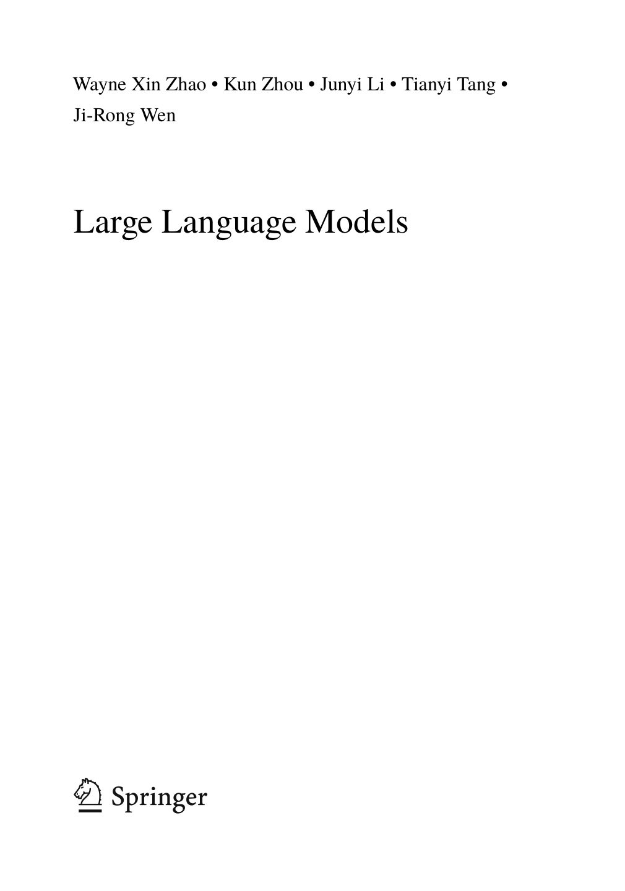

Artificial Intelligence: Foundations, Theory,
and Algorithms
Series Editors
Barry O’Sullivan, Department of Computer Science, University College Cork, Cork, Ireland
Michael Wooldridge, Department of Computer Science, University of Oxford, Oxford, UK
Artificial Intelligence: Foundations, Theory and Algorithms fosters the dissemination of knowledge, technologies and methodologies that advance developments in artificial intelligence (AI) and its broad applications. It brings together the latest developments in all areas of this multidisciplinary topic, ranging from theories and algorithms to various important applications. The intended readership includes research students and researchers in computer science, computer engineering, electrical engineering, data science, and related areas seeking a convenient way to track the latest findings on the foundations, methodologies, and key applications of artificial intelligence.
This series provides a publication and communication platform for all AI topics, including but not limited to:
- Knowledge representation
- Automated reasoning and inference
- Reasoning under uncertainty
- Planning, scheduling, and problem solving
- Cognition and AI
- Search
- Diagnosis
- Constraint processing
- Multi-agent systems
- Game theory in AI
- Machine learning
- Deep learning
- Reinforcement learning
- Data mining
- Natural language processing
- Computer vision
- Human interfaces
- Intelligent robotics
- Explanation generation
- Ethics in AI
- Fairness, accountability, and transparency in AI This series includes monographs, introductory and advanced textbooks, state-of-the-art collections, and handbooks. Furthermore, it supports Open Access publication mode.
